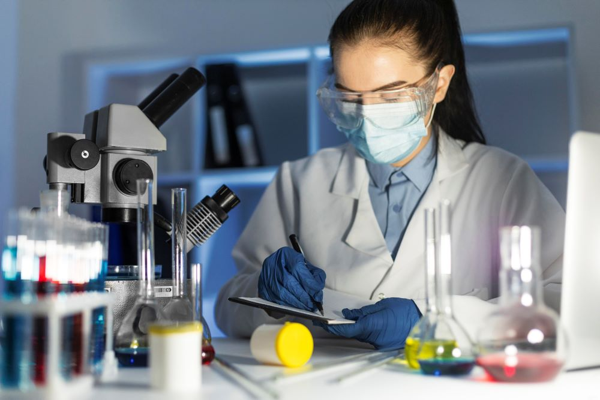
Pet Guardians Specialized Treatment Center
Home
특화진료센터
건강검진센터
가디언즈의 건강은
바로 건강검진에서부터 시작됩니다.
바로 건강검진에서부터 시작됩니다.
가디언즈 센터는 각각의 가디언들에게 가장 적합한 검진 항목을 통해 위험 인자를 사전에 찾아
예방하고 질병을 조기 진단하여 관리를 시작함으로써 우리 아이들의 건강을 유지/증진시키는데
중요한 역할을 하고 있습니다.
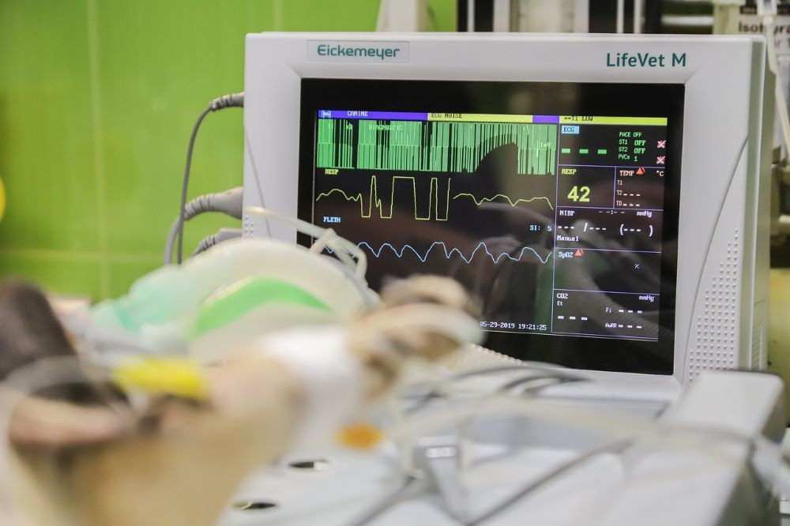
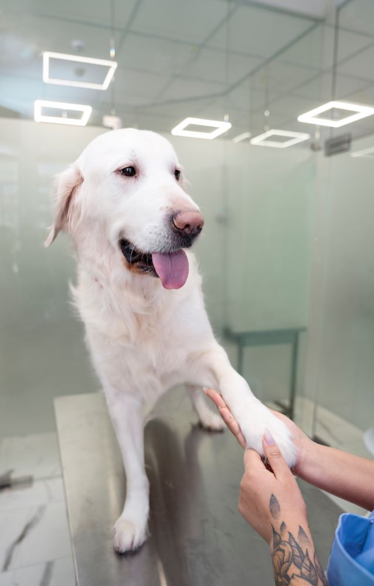
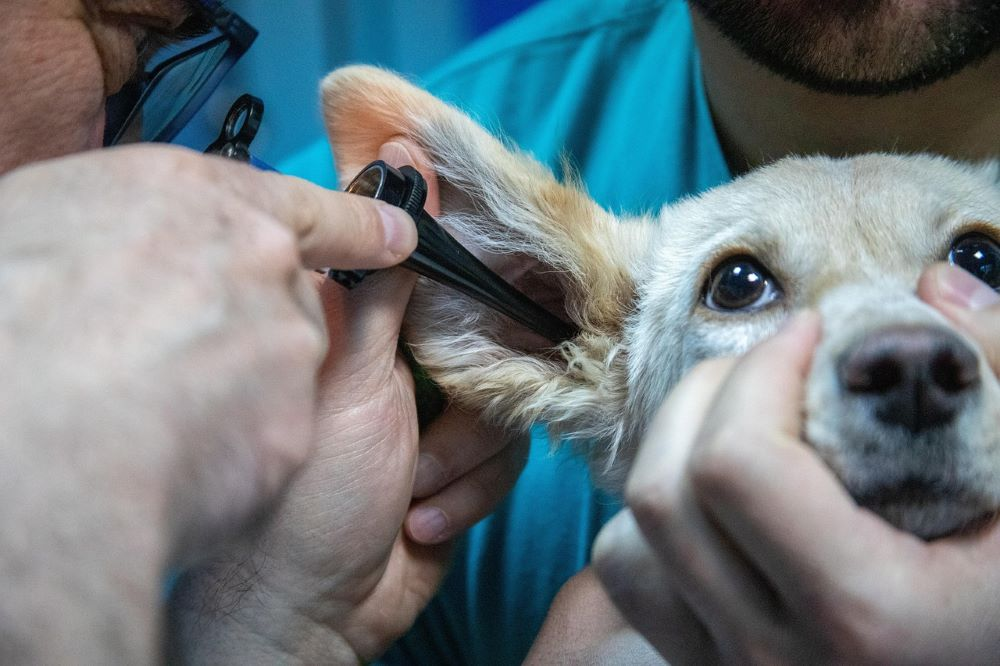
 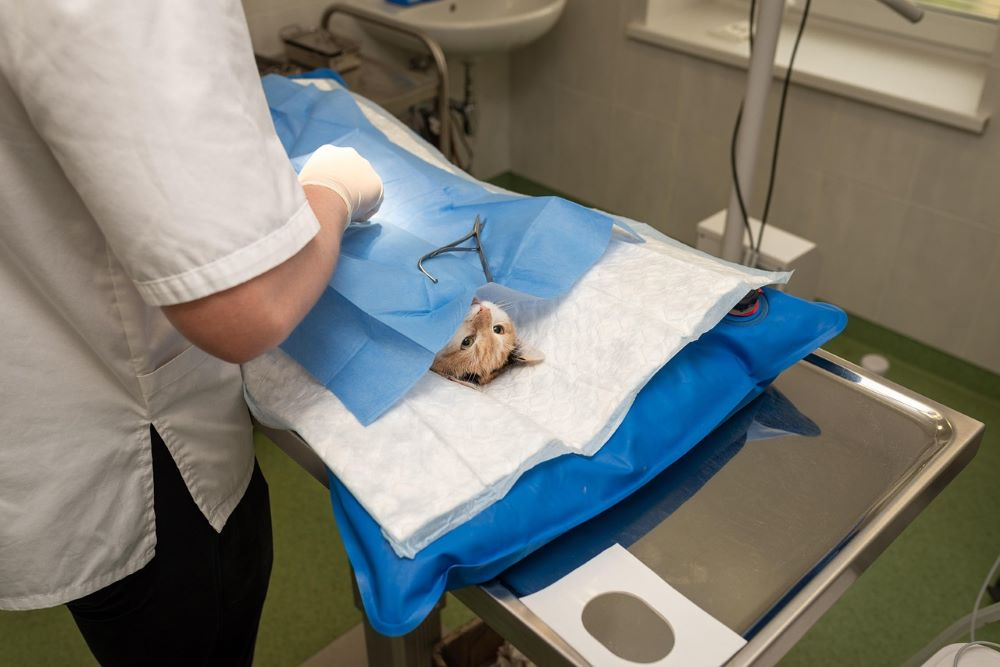
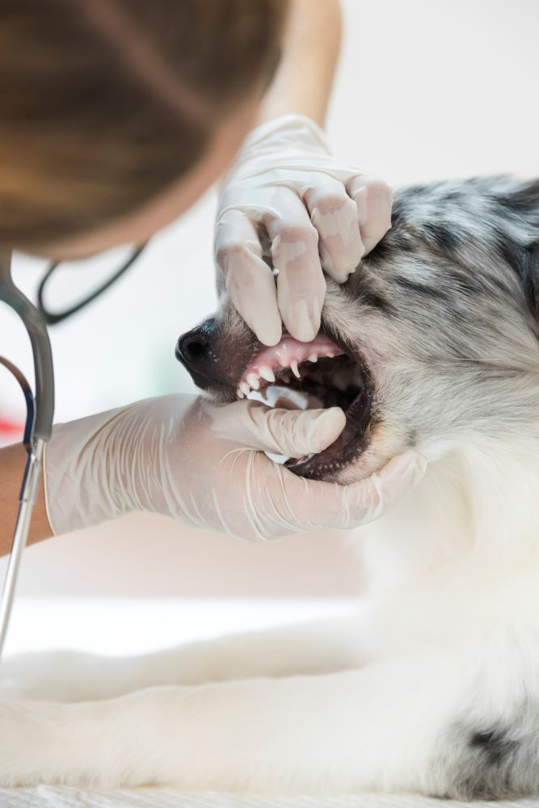
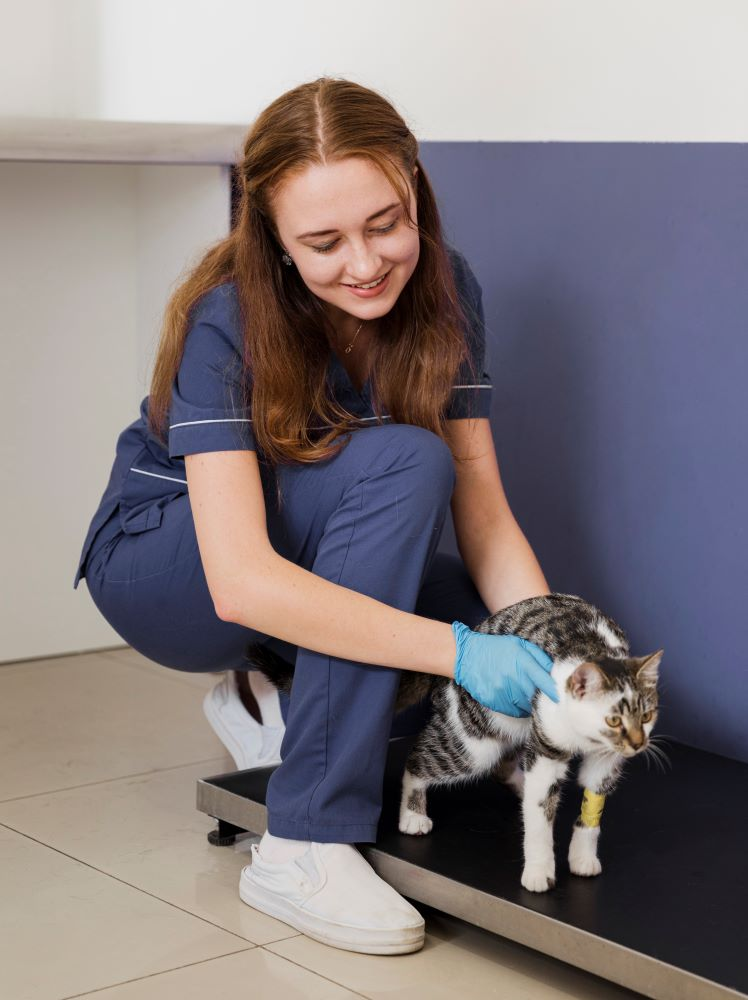
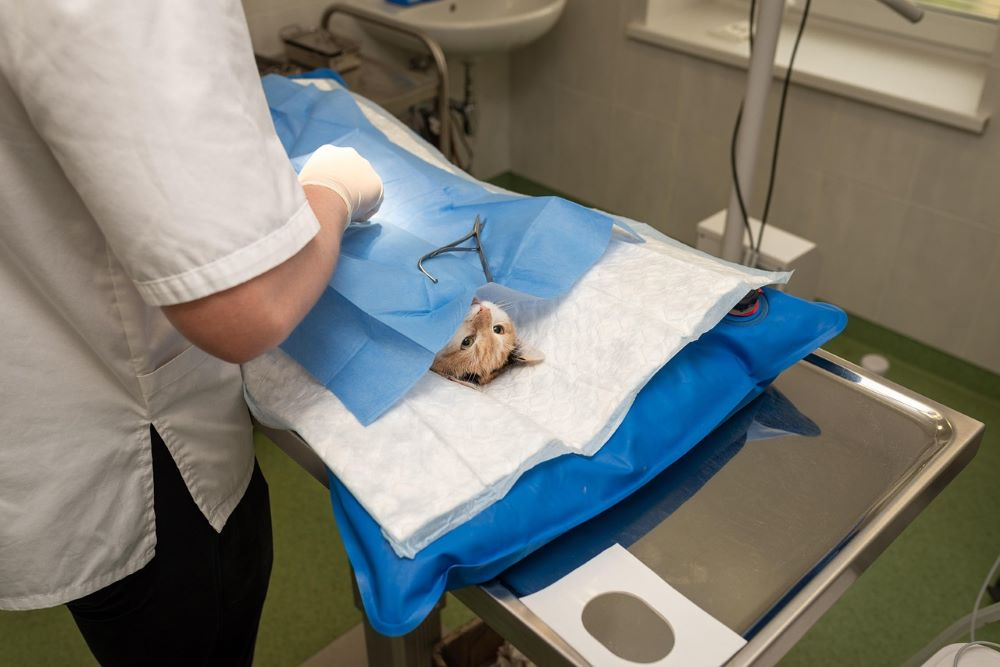
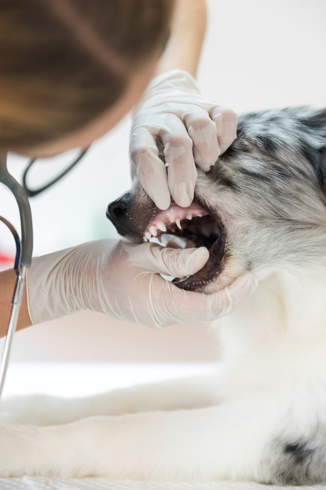
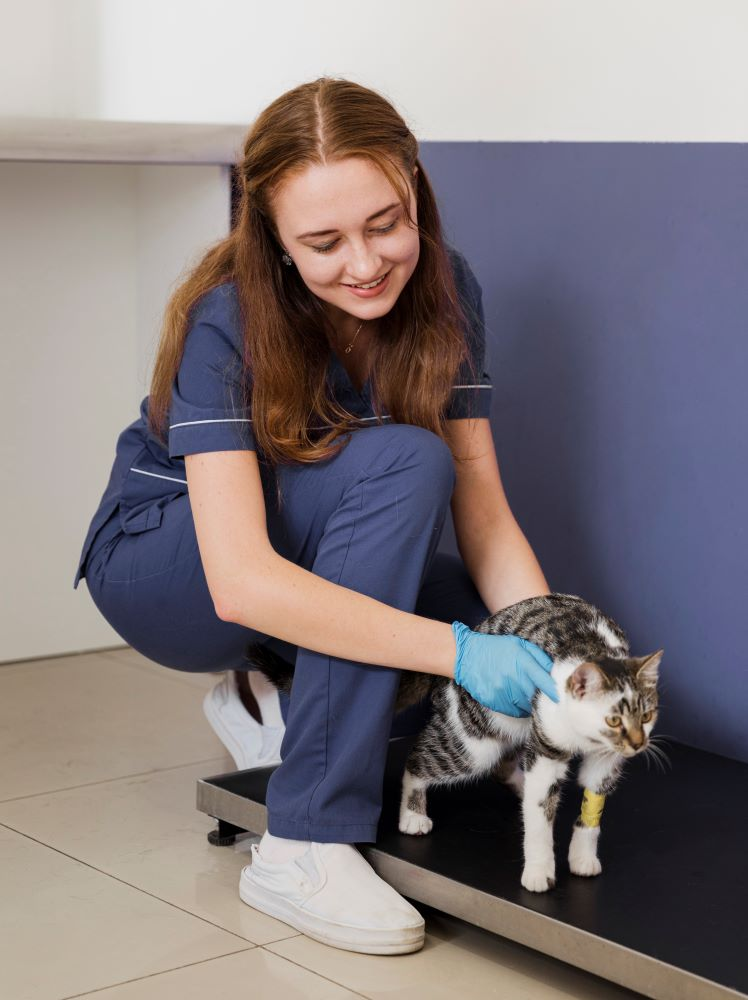
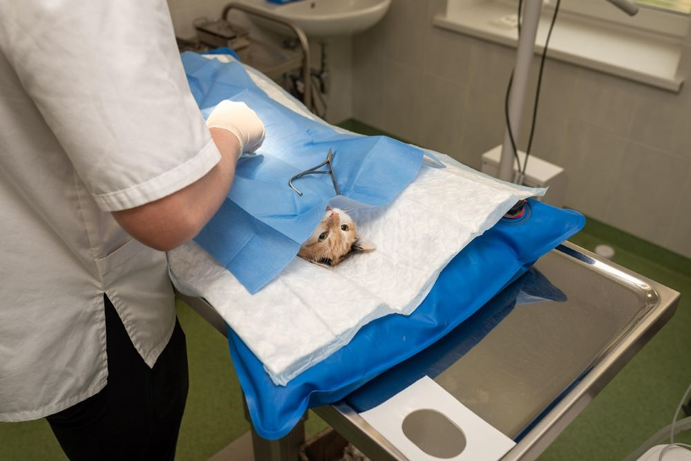
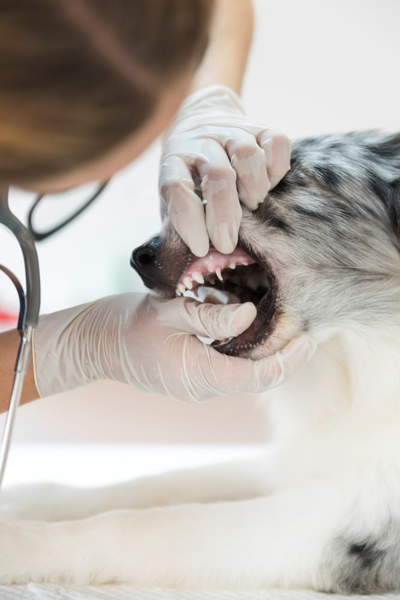
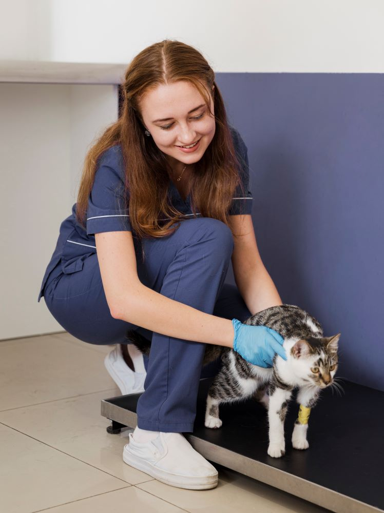
반려동물의 건강은 건강검진에서 시작됩니다.
PET GUARDIANS 건강검진 프로그램
PET GUARDIANS는 각각의 가디언즈들에게 적합한 검진 항목을 통해 위험 인자를 사전에 예방하고 질병을 조기 진단 관리를 함으로써
우리 가디언즈의 건강하고 행복한 삶을 위해 중요한 역할을 하고 있습니다.
가디언즈에서만 제공하는 특별 검진 프로그램
정기적인 건강검진은 가디언즈의 건강을 지키는 가장 확실하고 효과적인 방법입니다. 우리 가디언즈들은 자신의 상태를 보호자에게 전달하기가 어렵기 때문에 이상 징후를 발견하기가 쉽지않습니다.
따라서 PET GUARDIANS에서 제공하는 기본서비스로 각 가디언즈의 상태를 데이터화하여 백업 및 보관을 하고 주기에 맞춰서 올 수 있도록 우선 예약서비스를 실행하고 있습니다.

기본 프로그램
- 신체검사 : 체중, 비만도, 청진, 촉진 등을 통해 전체적인
가디언즈의 상태를 평가하여 평준화 합니다. - 혈액검사 : 빈혈, 염증, 간&신장 기능 이상 여부를
확인합니다. - 소변검사 : 신장 및 방광 기능, 전염병 감염 여부 등을 조기에
파악합니다.
특화 검진 프로그램
- 심장 특화 검사 : 심초음파 및 심전도를 통해 심장 질환
(부정맥, 심근비대 등)을 초기에 파악합니다. - 갑상선 검사 : 갑상선 호르몬(T4) 평가로 갑상선 기능
이상 여부를 확인하여 이상 발견 즉시 조치합니다. - 영상 진단 검사 : 흉&복부 방사선 및 복부 초음파로 내부
장기의 상태와 종양 유무를 정밀하게 분석하여
기존 데이터에 추가합니다.
맞춤형 가디언즈 내 패키지 콘텐츠 제공.
- 가디언즈의 연령대와 건강 상태, 가디언즈의 종에 따라
최적화된 검진 패키지를 설계 후 제공합니다. - 보험이 필요할 정도의 심각성이라면 보험과 연계하여
보호자와 함께 설계합니다. - 입원을 해야할 정도의 심각성이라면 원 내에 모든 가디언
들이 케어를 하는 것에 있어 최선을 다하여 현재 가디언즈
상태를 데이터화 하여 업로드하고, 보호자가 확인 할 수 있게
투명성을 제공합니다.
주요 제공 서비스
가디언즈에서 다음과 같은 서비스를 제공하고 있습니다.
01
AI 빅데이터 자가진단
- 1분 자가진단을 통해 병원에 오기 전 데이터
전송용으로 제출 후, 병원 도착 시 상황에 따라
바로 진단 및 수술을 받을 수 있습니다.
02
애니카 제공 서비스
- 먼 거리거나 위급한 상황일 경우 우선적으로
제공하며 자차 운용이나 다른 교통수단이 없
을 시 지원해드리고 있습니다.
03
병원 내 시설 및 시스템
- 가디언으로 취급받는 소중한 반려동물들이 병
원에서 맡겨지는 동안 편안함을 느낄 수 있도
록 내부 공간을 설계하였습니다.
04
보험 연계형 멤버쉽
- 일반 멤버쉽과 별개로 보험사와 직접 연계하
여 소중한 가디언들을 위해 보호자가 받을
수 있는 혜택을 제공하고 있습니다.
보호자가 가디언즈를 선택한 이유
우리 센터는 내과, 영상의학과 등 다양한 분야의 전문 의료진이 협력하여
가디언즈의 상태를 종합적으로 평가하고 최적의 검진 및 치료&수술 계획,
그리고 그 이후를 수립합니다.
- 최신 장비&기술력 뿐만 아니라 진료 빅데이터로 바탕으로 한 정확한 진단 제공
- 맞춤형 AI 검진 프로그램으로 가디언즈 개개인에 적합한 관리가 가능한 시스템 구축
- 협력 업체와 함께 복합적인 질환에도 완벽 대응 가능
- 예방 중심 접근으로 가디언즈와 장기적인 건강한 삶 유지 지원
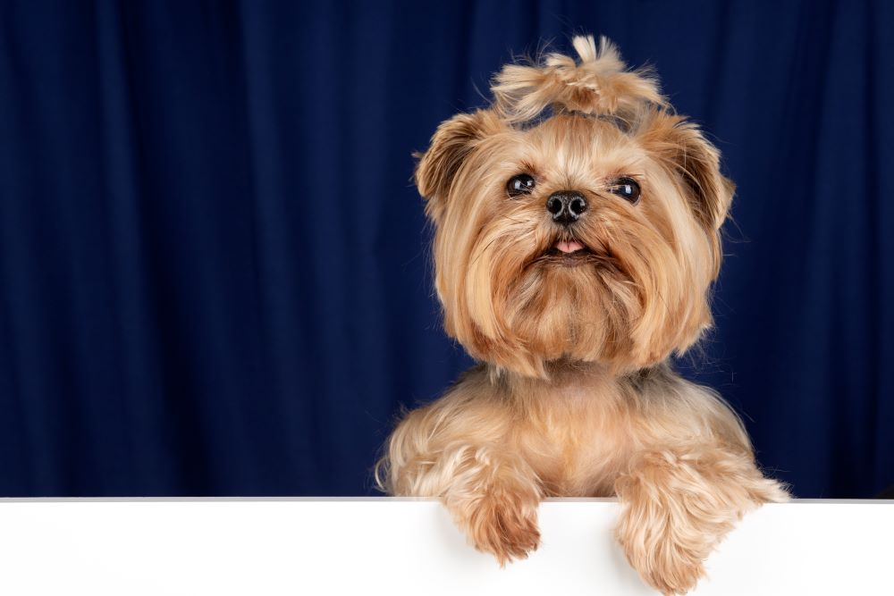
 메리츠화재보험
메리츠화재보험 삼성화재보험
삼성화재보험  캐롯손해보험
캐롯손해보험 DB손해보험
DB손해보험  KB손해보험
KB손해보험  라이나손해보험
라이나손해보험
(구)에이스보험 NH농협손해보험
NH농협손해보험 현대해상보험
현대해상보험